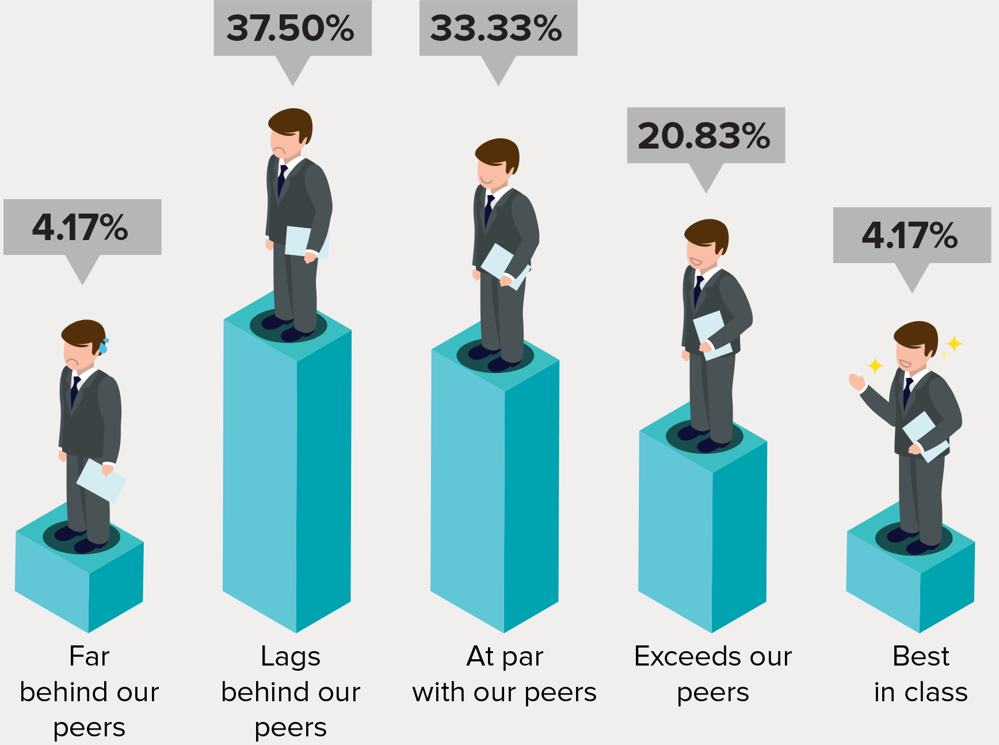
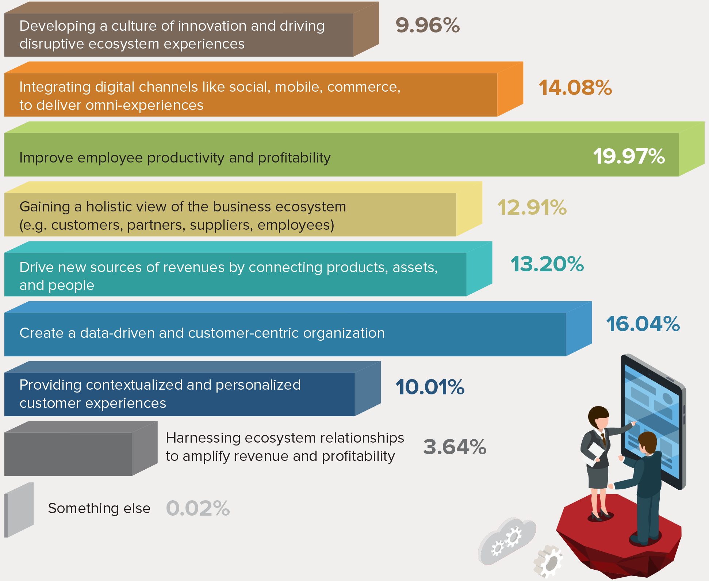
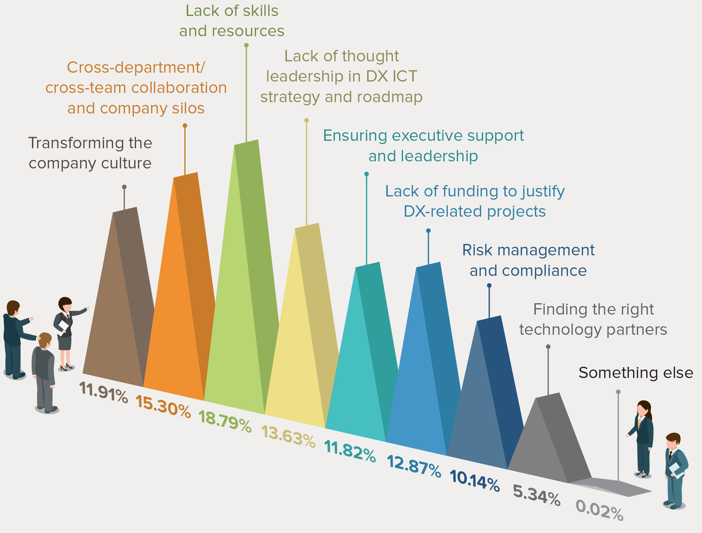
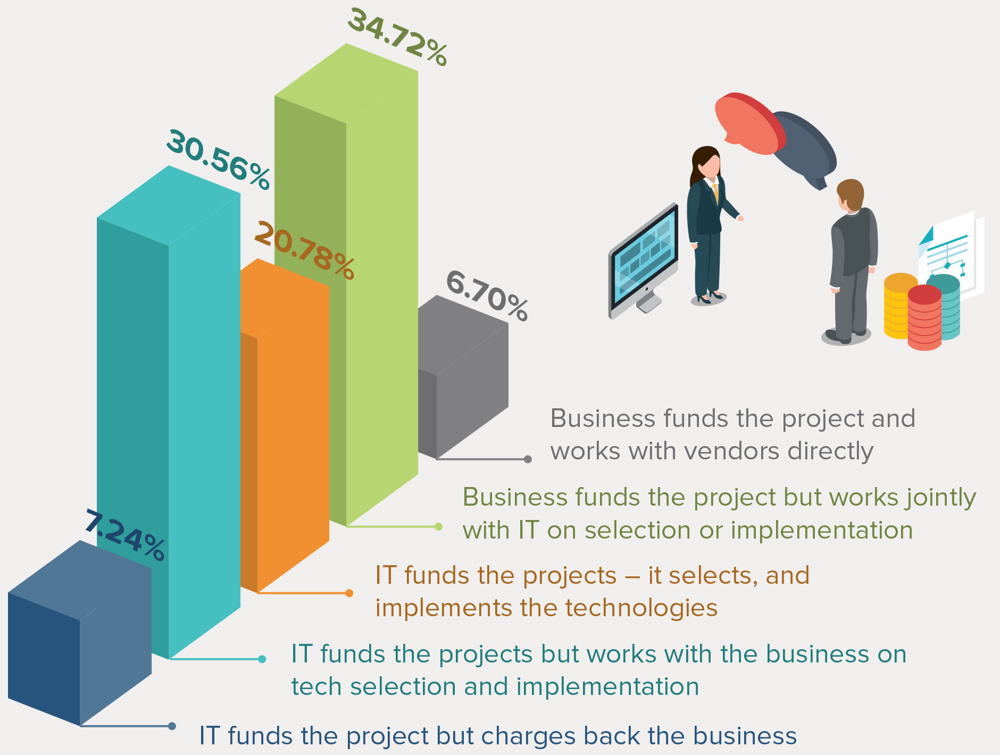
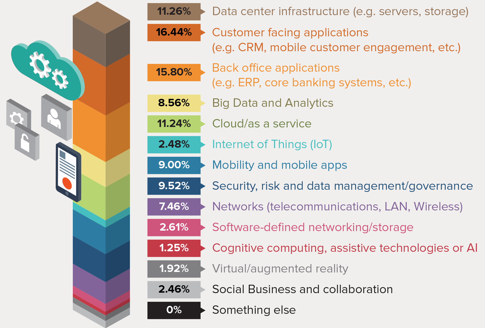

SMART DIGITAL WORLD In today’s fast-paced world the only constant is change. Enterprises need to move at customer-speed and embrace opportunities created by the digital disruption in their market space to stay ahead of the digital transformation curve, accelerate growth, and increase business value. This is the Avaya Smart Digital World initiative.
Digital enablement allows enterprises to re-invent themselves and innovate new, enhanced customer experiences across mobile, social, cloud, and big data touchpoints. Avaya’s Smart Solutions are client-tailored and outcome focused to elevate businesses of every size.
SMART EDUCATION solutions provide greater campus security for students and sta and optimized learning environments. From campus - to classroom - to student - and every in between, Avaya's reliable technology ensures rapid response and communications when situations a ecting learning arise.
Smart education provides a broad range of classroom, distance, online and hybrid learning solutions for institutions with cost e ective ways to attract, retainand engage higher achieving students and staff.
USE CASE: Kathleen Carter, Technology Coordinator at Sharp University, lead modernization curve and wants to exploit technology as powerful educational and operational tools. Kathleen is responsible for ensuring the multi-campus network can support the university’s mobile-led connectivity and safety strategies for 50,000 students and 18,000 staff.
SOLUTION: Kathleen leveraged smart classroom and smart onboarding technologies into the campus hardware and software infrastructure enabling teachers and students to utilize media-rich, BYOD resources to support on-campus learning environments and remote distance learning outreach programs. Smart Education solutions integrated with the public safety center to upgrade security with dynamic team formation to improve on-campus dispatch turn-around. The portfolio enhances Sharp’s ability to provide safe, connected, optimized learning environments for sta and students is necessary to thrive and push forward in a smart digital world.
SUCCESS: Kathleen was able to create a wider coverage area, with 99% service availability, for campus connectivity. Reliable up-time enables the growing allocation of mobile-enriched classrooms but also cuts down on response times while improving dispatch accuracy when it comes to on-campus security, enabling a safer, smarter campus.
Creates optimized classroom productivity with student and activity monitoring for uninterrupted learning.
Facilitates response team formation for 'emergency' situations with location or event-based triggers.
Automates the registration process for virtual distance learning courses.
Harnesses proximity awareness with smart campus infrastructure and iBeaconing for safer campuses.
Allows students to attend classes remotely on their mobile devices, rather than being in the actual classroom
Provides advanced proximity awareness capabilities like school bell scheduling, paging, door control, help buttons, etc
25% of organizations believe that they are better than their peers in implementing third platform technologies and innovation accelerators.
More than 50% of the organizations are using digital transformation technologies to improve productivity and customer experience.
While most organizations are clear on their digital transformation strategy, almost 50% of them continue to struggle with lack of skills and resources.
When it comes to funding digital technology investments, IT is still the major decision maker in more than 50% of the organizations.
Most organizations still invest in infrastructure and applications and less on technology trends.
